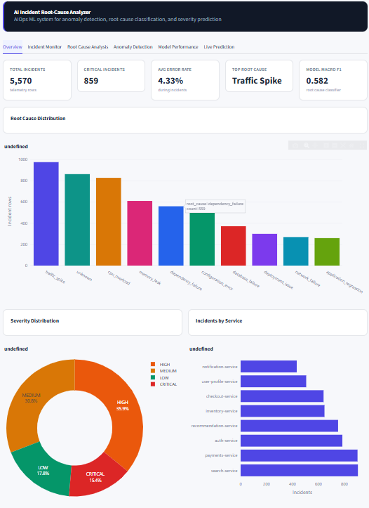

01
AI Incident Root Cause Analyzer
When production breaks, what failed, and why?
Case 01 · AIOps & Deep Learning
AI Incident Root Cause Analyzer
When production breaks, what failed, and why?
What I did
- Built an AIOps system that analyzes application telemetry to detect anomalies, using a classical anomaly detector alongside a deep-learning LSTM Autoencoder.
- Classified the most likely root cause of each incident and predicted its severity.
- Explained every prediction with SHAP so the reasoning is visible instead of a black box.
- Exposed everything through a FastAPI REST API and an interactive Streamlit dashboard, with PostgreSQL storage and Docker Compose.